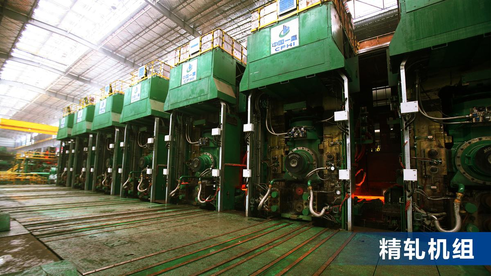
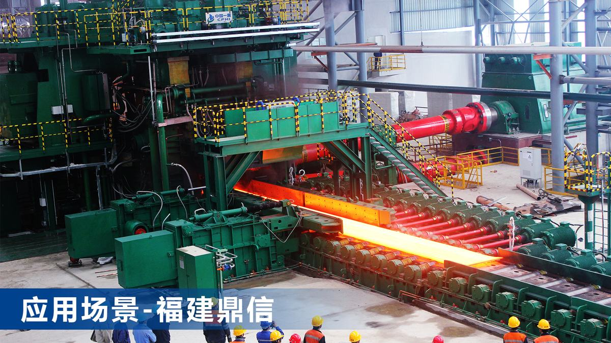
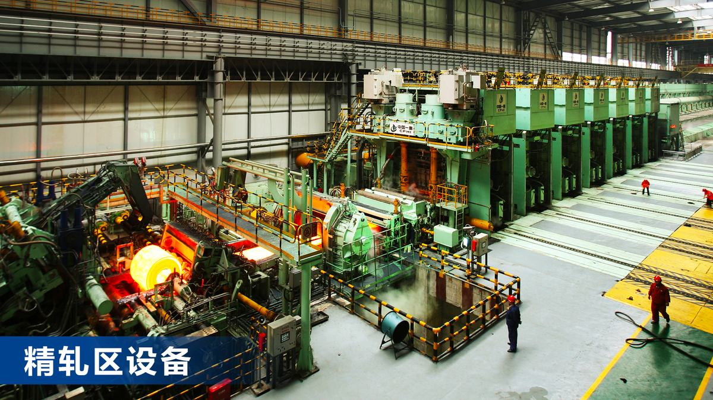

该项目针对我国高附加值不锈钢产品的核心关键技术长期被德国西马克、日本三菱等垄断，核心技术受国外制约等“堵点”问题，解决不锈钢热连轧工艺“黑匣子”与装备设计及生产“卡脖子”关键技术难题而研制的。
宽幅不锈钢薄带钢热连轧生产线用于生产航空航天、海洋工程、核电、建筑等国民经济重要领域高端不锈钢板材。由于不锈钢变形抗力大、轧制温度区间窄、质量要求高，本项目所生产的不锈钢板材的超薄、超宽，超出了国际现有产品规格的极限，且国家发展战略要求设备智能化、绿色化，使该热轧成套装备的研制难度极大。为此，中国一重与太原理工大学以不锈钢“轧制关键技术设计→成套装备自主设计→智能优化系统集成”为技术路线，创新设计出世界首套最宽幅不锈钢超薄带钢热连轧生产线并应用。其创新如下：
对比国内外最先进产线，设备布局、产能及规格等指标优于国外，设计成果对解决我国高端领域超薄不锈钢热轧板材“卡脖子”难题具有重要意义。授权发明专利17项，实用新型专利7项，软件著作权2项，发表专著1部及论文16篇。
鉴定专家认为：“项目具有自主知识产权，总体技术达到国际先进水平，在“1+8”热连轧工艺技术、弯窜辊装置及板形调控方面达到了国际领先水平”。
已应用于河北钢铁、福建鼎信等10余家企业，实现了1.8mm极限厚度和2400mm极限宽度不锈钢稳定生产，国内同类生产线市场占有率达90%以上，仅福建鼎信使用本技术近3年就新增产值785.70亿元，利税28.91亿元，并出口一带一路沿线国家印尼，创汇6.51亿美元，助力我国“一带一路”战略实施，为其控股集团进入世界500强奠定了可靠基础。其经济和社会效益十分显著。
1设计原创性（创新点）
(1)宽幅不锈钢热连轧“1+8”型生产线设备配置与轧制工艺开发。首创出“1+8”宽幅不锈钢热连轧生产线工艺配置，开发了基于负荷分配和板形良好的高精度分配策略、温度模型、力能模型、微观组织与力学性能预测模型，构建了全流程模拟分析系统与工艺优化技术，与国际通用的“1+7”和“2+7”形式相比，实现了多品种、多规格不锈钢热轧产品高效稳定生产以及厚度与宽度极限突破。获发明专利6项(ZL201210500662.6、ZL201310752022.9、ZL201410653405.5、ZL202011452203.6、ZL201410653123.5、ZL 2021 1 0159121.0）。
(2)宽幅不锈钢薄带热连轧成套装备的自主设计。设计开发出新型精轧机工作辊弯辊横移装置、粗轧全区域保温罩及新一代热卷箱精准温控装备、超高压水/高压蒸汽除鳞装备、闭口式机架夹送辊装置、绿色环保喷雾除尘装置，实现了宽幅不锈钢薄带热连轧成套装备自主设计开发与绿色化应用示范。获发明专利11项(ZL201810137638.8、ZL201310752000.2、ZL201310750345.4、ZL201910833415.X、ZL201510567740.8、ZL201410653546.7、ZL202010666212.9、ZL201710958167.2、ZL201910126075.7、ZL201910053450.X、ZL202010155470.0)
(3)机理和数据双驱动的不锈钢热连轧模拟分析系统与智能化设计。构建出热轧不锈钢全系列本构模型和变形抗力数据库以及多规格轧线数据库，研发出融合机理模型、生产数据与深度学习算法的不锈钢热轧生产线与工艺参数设计软件，开发出适合带钢板凸度控制和均匀辊间压力的辊型曲线设计优化系统，增强了产品板形精确调控能力及轧制稳定性，实现了热连轧生产线总体布局、设备配置、参数优化等数字化与智能化控制。获软件著作权2项(2020SR1833326、2021SR039735)，专著1部(CIP数据核字（2021）第067777号）。
2关键技术
生产线设备配置与轧制工艺参数是产品生产控制质量、提升产量、降低成本、提高效率的重要保障。项目首创出“1+8”设备配置，建立全流程温度、力能、板形计算模型和最优负荷分配策略，构建了全流程模拟分析系统与工艺优化技术，研发出高效率、低成本、高质量的宽幅不锈钢薄带钢热连轧轧制规程。
1）首创“1+8”型不锈钢热连轧生产线设备配置方案，突破厚度与宽度极限规格轧制难题。综合考虑不锈钢变形抗力大的难点，在工艺上制定了更合理的各道次分配策略和温度控制策略。
2）建立不锈钢热连轧生产过程从出炉、粗轧、热卷箱、精轧、冷却到卷取的全流程温度计算模型，提升轧制过程温度计算精度，为变形抗力精准预测提供支撑。建立轧制入口、变形区、出口温度预报模型；融合各区域温度模型，提出一种以温度和轧制力为目标函数的解耦方法，得到轧制中温度分布情况。
3）建立了高精度轧制力能参数计算模型，提升轧制过程板厚、板形协调控制能力，为高质量产品提供理论支撑。构建不锈钢热连轧过程中轧制力和板形参数的精准预测模型。创新性地建立了融合双流函数法和变分法的立辊轧制的轧制力和轧件形状参数模型，构建了高精度宽度控制策略。
4）建立基于粗轧电机功率道次均衡与精轧板形最优原则的轧制过程负荷最优分配方案，实现高效、高质量轧制。粗轧基于各道次电机功率均衡原则，实现各道次轧制压下合理分配。精轧基于板形最优的道次负荷分配原则，建立了相对等负荷、板形良好等多目标优化策略，实现负荷最优分配。
5）开发了轧件塑性变形三维有限元法与辊系弹性变形影响函数法耦合的板形计算模型。开发和完善适用于不锈钢轧制过程的基于刚塑性有限元法的轧件三维塑性变形计算方法。构建基于影响函数法的轧辊弹性变形计算方法。该算法具有计算耗时少、结果精度高的优点。
6）构建了全流程设计分析系统与工艺优化技术，设计集成了不锈钢极限规格轧制规程智能化设计软件。采用该软件对“1+8”以及国际通用的“1+7”和“2+7”热连轧生产线工艺配置进行模拟计算。结果表明：“1+8”具有压下负荷分配更均匀、成品厚度更薄和宽度尺寸更大、头尾温差小、板形控制更优异的优势。
针对不锈钢轧制生产难点和“1+8”型生产线工艺布置方案，自主设计开发出工作辊弯辊横移装置、热卷箱、高压水/蒸汽除鳞装备、夹送辊装置、喷雾除尘装置、智能化钢卷运输线，实现了宽幅不锈钢薄带钢高效绿色智能生产。
1）设计开发了新型工作辊弯辊横移装置，增强产品板形精确调控能力，延长工作辊使用寿命。减少了液压缸、密封件和泄油点数量，提高了使用安全可靠性；避免误操作造成换辊事故，提高效率10%以上；提高辊缝调整的控制精度；零部件数量减少50%。该工作辊弯辊横移装置已广泛应用于1250至2680mm等热连轧生产线中，实现了规格范围全覆盖，打破了国外技术垄断。
2）建立了基于多目标函数优化原则的轧机机架和辊系尺寸设计优化模型。建立机架参数化结构模型并进行模拟加载分析。建立以板凸度影响系数、轧机机座重量、轧机刚度等为多目标函数的轧机机座和辊系尺寸设计与优化模型，获得设计参数最优值，提升了热连轧生产过程的工艺控制精度。
3）提出适合带钢板凸度控制和均匀辊间压力的辊型曲线设计优化方法。提出一种既可连续改变辊缝凸度值，又可根据板带断面形状目标板形要求改变辊缝曲线形状的轧辊辊型，有效解决了工作辊与支承辊间接触载荷不均匀问题。
4）提出了不锈钢热连轧保温罩、热卷箱等多种保温工艺及装备配置方案，实现了带钢温度精准控制。设计的新型热卷箱设备，采用入出口弯曲辊辊缝单独可调技术，有效控制卷眼形状；应用双工位开卷技术，提高产线生产节奏，并设计出世界最宽规格2680mm热卷箱设备。
5）设计开发了超高压水/高压蒸汽除鳞技术，有效去除不锈钢表面氧化铁皮，提高了带钢产品表面质量。在生产6mm厚度以下成品带钢时，采用高压蒸汽吹扫除鳞，减小中间坯温降。除鳞喷嘴前高压水压力达到30MPa。
6）设计了新型闭口式机架夹送辊，提高了上夹送辊总成对带钢夹持的稳定性与上夹送辊总成的更换效率。解决了机架结构刚性不足问题，同时也提高了卷取机前夹送辊对夹持带钢的稳定性。
7）设计了绿色环保的喷雾除尘系统，减小了不锈钢热连轧精轧出口大量烟尘污染。该喷雾除尘系统根据轧机粉尘特性进行定制化的精确喷雾设计，从源头大幅消除氧化颗粒粉尘，并抑制细颗粒粉尘的逸散，从而有效达到除尘目的。
8）设计了智能双排并列式滑触线钢卷运输系统。该系统具备简单、高效、高速、节能、环保、事故率低、易维护等优点，同时配合使用无线通迅技术，实现钢卷智能运输的目标。
以热轧不锈钢生产数据为基础，构建出热轧不锈钢全系列本构模型和变形抗力数据库以及多规格轧线数据库；深度融合机理模型和生产数据，开发机理和数据双驱动的热轧不锈钢板带力学性能精准预测模型，实现热轧板带形性精细化调控。设计了新型不锈钢热连轧全流程设备、工艺、产品柔性适配的数字孪生系统，实现了“1+8”型热连轧生产线布置、关键设备和工艺参数的快速优化。
1）构建全系不锈钢高温变形本构模型和材料变形抗力数据库，提升轧制过程力能参数预测精度，为优化轧制规程、板形控制和装备提升提供理论基础。
2）开发了多约束规则条件的人工智能设计方法和推理机制，建立了产品大纲齐全、设备布置合理、生产效率高的不锈钢热连轧生产线总体工艺方案数据库，满足用户对定制化、个性化产品的需求。
3）构建基于生产数据和板形控制机理模型相融合的热轧不锈钢板形智能预测模型，实现对热轧现场板形相关数据的在线收集、深度挖掘和高效利用。
4）开发全流程再结晶和相变模型，构建机理模型和数据双驱动的不锈钢微观组织与宏观力学性能精准预测模型，实现热轧过程板带性能精细化调控。
5）构建融合机理模型、生产数据与深度学习算法的工艺参数预测与优化模型，设计了新型不锈钢热连轧全流程设备、工艺、产品柔性适配的数字孪生系统，实现轧机关键设备和工艺参数的精准预测与优化。
3设计先进性
本项目自主设计的溧阳德龙2680mm是目前世界上最宽规格的不锈钢热连轧生产线，稳定生产宽度为2400mm的不锈钢产品，远超国外技术指标(以西马克、三菱为代表）。该成果实现1.8mm极限薄规格产品的稳定生产，优于国外2.0mm厚度规格，设计成果解决了我国高端领域超薄不锈钢热轧板材“卡脖子”难题。
以福建鼎信为例，使用本技术近3年产生新增产值785.70亿元，新增销售额865.54亿元，新增利税28.91亿元，创收外汇6.51亿美元，其中使用本项目技术产生新增销售额占比为82.66%。可稳定生产各类不锈钢产品约360万吨/年，并可以生产厚度为1.8mm不锈钢的极限产品，创造了行业纪录。产品经过检验，其主要指标达到或超过国外同类产品，填补国内不锈钢的产能不足。
本项目创新设计的新型喷雾除尘系统，可根据轧机粉尘特性进行定制化的精确喷雾，从源头大幅消除氧化颗粒粉尘，并抑制细颗粒粉尘的逸散，从而有效消除了粉尘对环境的污染，使原污染严重的传统热连轧生产线变成了清洁绿色工厂，实现了宽幅不锈钢薄带钢热连轧生产线的绿色化应用示范。
4设计效益水平
经济效益：成果成功应用于福建鼎信，后续又推广至上海鼎信（印尼）1780mm（成套出口）、江苏德龙1450mm、溧阳德龙2680mm（世界上最宽规格）等8条不锈钢生产线，总合同额达到631830万元，创造了巨大的经济效益。国内宽幅不锈钢热连轧生产线市场占有率高达90%以上，具有强力的市场竞争力。
社会效益：该项目打破了国际垄断，为国内冶金热轧技术的发展做出巨大的贡献。同时，将成套设备出口至印尼、马来西亚和土耳其等国家，支撑我国实施“一带一路”战略，取得了显著的经济与社会效益。



宽幅不锈钢薄带热连轧线,打破西马克/三菱垄断
冶金生产线
间接服务航空/核电高端板材
高附加值不锈钢板材战略产线
冶金装备自主化的代表